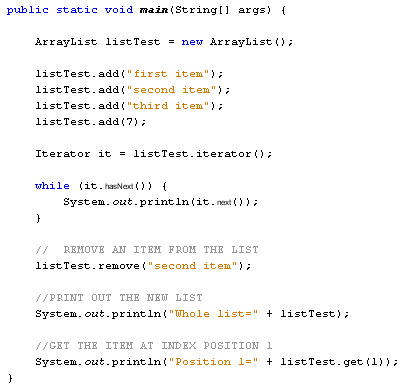

Array Lists in Java
If you don't know how many items are going to be held in your array, you may be better off using something called an ArrayList. An ArrayList is a dynamic data structure, meaning items can be added and removed from the list. A normal array in java is a static data structure, because you stuck with the initial size of your array.
To set up an ArrayList, you first have to import the package from the java.util library:
import java.util.ArrayList;
You can then create a new ArrayList object:
ArrayList listTest = new ArrayList( );
Notice that you don't need any square brackets this time.
Once you have a new ArrayList objects, you can add elements to it with the add method:
listTest.add( "first item" );
listTest.add( "second item" );
listTest.add( "third item" );
listTest.add( 7 );
In between the round brackets of add you put what it is you want to add to the ArrayList. You can only add objects, however. The first three items we've added to the list above are String objects. The fourth item is a number. But this will be a number object of type Integer, rather than the primitive data type int.
Items in the list can be referenced by an Index number, and by using the get method:
listTest.get( 3 )
This line will get the item at Index position 3 on the list. Index numbers start counting at zero, so this will be the fourth item.
You can also remove items from an ArrayList. You can either use the Index number:
listTest.remove(2);
Or you can use the value on the list:
listTest.remove( "second item" );
Removing an item will resize the ArrayList, so you have to be careful when trying to get an item on the list when using its Index number. If we've removed item number 2, then our list above will contain only 3 items. Trying to get the item with the Index number 3 would then result in an error.
To go through each item in your ArrayList you can set up something called an Iterator. This class can also be found in the java.util library:
import java.util.Iterator;
You can then attach your ArrayList to a new Iterator object:
Iterator it = listTest.iterator( );
This sets up a new Iterator object called it that can be used to go through the items in the ArrayList called listTest. The reason for using an Iterator object is because it has methods called next and hasNext. You can use these in a loop:
while ( it.hasNext( ) ) {
System.out.println( it.next( ) );
}
The method hasNext returns a Boolean value. The value will be false if there are no more items in the ArrayList. The next method can be used to go through all the items in the list.
To test all this theory out, try the following code:

Notice the line that prints out the entire list:
System.out.println( "Whole list=" + listTest );
This gives you a quick way to see which items are on your list, if it gets a bit too long.
When the code is run, the Output window will display the following:
first item
second item
third item
7
Whole list=[first item, third item, 7]
Position 1=third item
To sum up, then, use an ArrayList when you're not sure how many elements are going to be in a list of items.
We'll leave arrays, for now, and move on. In the next section, we'll tackle
strings.